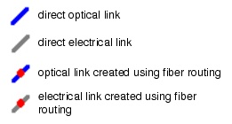
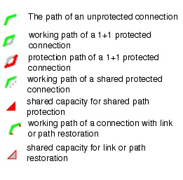

OCH Link Browser
The OCH Link Browser shows information about the wavelengths and in-line sites of the WDM line systems present on a link. It also shows information such as the used bands on a WDM line system and the number of wavelengths used for working, protection, or shared (that is, restoration or shared protection) capacity.
Figure 4-4 OCH Link Browser
|
Level
|
Object
|
Fields
|
Comments
|
|---|---|---|---|
|
1
|
OCH link
|
|
This level includes the following right-click menu operations:
This level uses the following icons to indicate link types:

|
|
2
|
Equipped Fibers
|
|
This level includes the following right-click menu operations:
This level uses the following icon to indicate the line system type:
|
|
31
|
Amplification / regeneration site
|
This level uses the following icons to indicate equipment types:
|
|
|
32
|
Wavelength on the equipped fiber
|
This level includes the following right-click menu operation:
This level uses the following icons to indicate equipment types:

This level also uses the following icons to indicate which path of an OCH connection is routed over a particular wavelength:
 |
|
|
End of Table 4-3
|
|||
| 1With "Show in-line sites" option selected 2With "Show wavelengths" option selected |
Adding/Removing OCH Capacity
The following operations are available by right-clicking on an OCH link in the link browser:
- Equip Fiber Pairs—Equips one or more fibers with a WDM system. All wavelength bands on the fiber are equipped.
- Strip Unused Fiber Pairs—Removes all fiber pairs on which no traffic is routed.
- Equip Next Band—Equips the next wavelength band on the WDM system. If the selected WDM system is not present on the link, or has no remaining bands, a new WDM system is added with only the first band equipped.
- Strip Unused Bands—Removes all wavelength bands on which no traffic is routed. The fiber itself is not removed if all wavelength bands of an entire fiber are removed.
Similar functions are available when you right-click on an individual equipped fiber.
Wavelength Filtering
Some channels on a link might be unavailable due to transmission limitations or the spacing used between wavelengths. You can enable or disable these wavelengths on a per-link and per-WDM-system basis. To do this, right-click on a link in the OCH Link Browser and select Wavelength Filter.
In the Wavelength Filter dialog box, you can enable/disable wavelengths by clicking in the in the Yes/No toggle fields (for individual wavelength) or the buttons below the table. You can enable/disable wavelengths for each specified WDM line system (use the LS Type menu to select a different system). The wavelength filter applies to all fibers equipped on a specific link with the specified line system.
Figure 4-5 Wavelength Filter Dialog Box